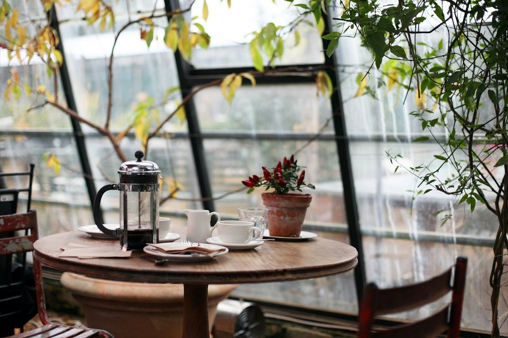

Zao Café
Café de especialidad, crepas y un rincón para quedarte aunque afuera esté lloviendo.
Especialidades

Nuestro rincón
En Zao Café creemos que hay lugares para cualquier plan: venir en pareja, desayunar con calma o simplemente sentarte con un café mientras afuera llueve un poco. Nos encuentras en el corazón de Espíritu Santo, Metepec, justo frente a las escalinatas de la Capilla del Calvario.
Abrimos todos los días desde las 9:30 am hasta bien entrada la noche, para que el café, las crepas y los buenos momentos nunca falten — sea la primera taza del día o la última antes de irte a casa.
Reseñas
Un lugar muy bonito, muy buena música, muy rica la comida, muy buen servicio 😁
Ver en Google ↗
Estuvo muy rico las crepas, muy generosas, y excelente servicio.
Ver en Google ↗
La comida deliciosa y los platillos muy abundantes.
Ver en Google ↗
Horario y ubicación
Estamos en Espíritu Santo, Metepec, frente a las escalinatas de la Capilla del Calvario.
Horario
| Lun, mar, mié, dom | 9:30 am – 11:00 pm |
| Jue, vie, sáb | 9:30 am – 11:30 pm |
Dirección
Av. Estado de México s/n, esq. Porfirio Díaz,Espíritu Santo, Metepec, Méx. 52140